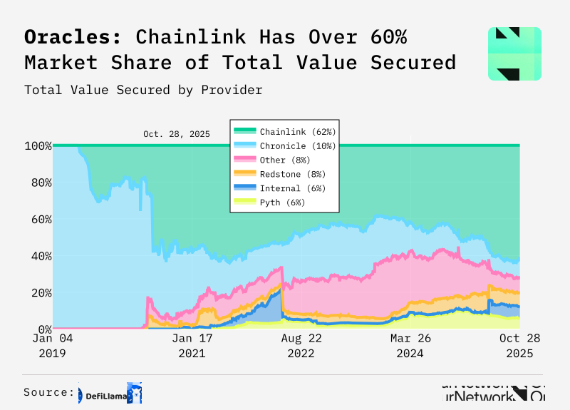

- Running operations for OurNetwork, a research organization focused on onchain data, 2024-2026
- ○ grew newsletter from 30,000 to 36,000 subscribers
- ○ managed partnerships with $1B+ blockchains like Polygon, NEAR, and Sui
- ○ developed editorial systems to serve community of 500+ data analysts
- ○ modified Python code to create custom data visualizations (like this one)
- Worked as a reporter for The Defiant, a media company founded by a Bloomberg alumnus, 2021-2023
- A few essays from independent writing
- Some favorite books
- Formally (and informally) educated
- ○ BA in Economics from University of California Santa Cruz, Honors
- ○ Should've gone to UC San Diego (I got in!)
- select classes:
- ○ International Finance
- ○ Introduction to Programming (Accelerated)
- ○ Securities Markets
- ○ Policy Issues in the International Economy
- ○ Two years of Japanese coursework including study abroad in Tokyo
- ○ Applied Business Calculus
- ○ Economics of E-Commerce
- ○ Economic Rhetoric
- ○ One year of Spanish and one year of French
- Has a few hobbies
- ○ league and pickup basketball
- ○ chess
- ○ spending time with family and friends
email: owenfernau at gmail.com
